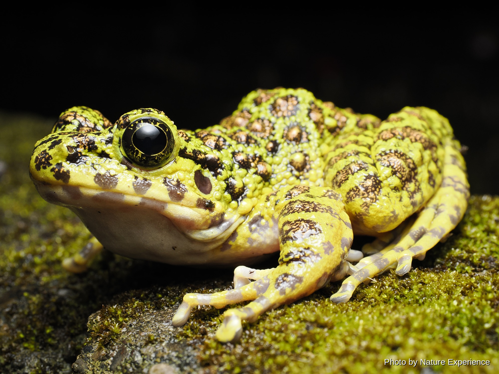

アマミアカガエル
大きさ3.2〜4.6cm 繁殖時期11月から1月。平地から山地までの森林、河川周辺に生息。繁殖時期になると小さな池や湧水の溜まり場などに集まる。林道にも出てくる個体が見られ。

CREATURES / RYOUSEIRUI
雨の夜、森や水辺に響くさまざまな鳴き声。奄美大島の水辺には、この島ならではの両生類が暮らしています。
ABOUT
奄美大島には、森の中や渓流、水田など、さまざまな環境で暮らすカエルやイモリたちがいます。雨の降る夜には、それぞれ異なる鳴き声が森に響きます。
島にしかいない固有の種類も多く、見た目や大きさ、暮らす場所はさまざまです。木の上で過ごすもの、水辺で見つかるもの、落ち葉の下に隠れているものもいます。
出会えたときは、光を長く当て続けず、静かにその姿を楽しんでください。
水辺や卵、幼生を傷つけないよう、見つけても触らず、足元に注意して静かに観察してください。
FROGS OF AMAMI
奄美大島の森や水辺で出会えるカエルを紹介します。写真や名前をクリックすると、それぞれの詳しいページを見ることができます。
大きさ3.2〜4.6cm 繁殖時期11月から1月。平地から山地までの森林、河川周辺に生息。繁殖時期になると小さな池や湧水の溜まり場などに集まる。林道にも出てくる個体が見られ。
大きさ4.5〜7.7cm 繁殖時期12月下旬から5月頃。低地から山地まで分布し、池や水田などの止水域周辺の森に生息。樹上の枝の上や岸辺の草などに白い泡状の卵塊を産み付ける。

大きさ9〜12cm。「日本一美しいカエル」とも称される奄美大島の固有種。美しい緑と金色の斑紋を持ち、夜の渓流付近で独特な高い鳴き声を聞かせてくれます。

体長9〜14cmに達する大型のカエル。指の脇に隠された「偽の親指（棘）」を持つ珍しい特徴があり、重厚な鳴き声で夜の山林に響き渡ります。

体長約6〜8cm。すらりとした脚と尖った鼻先が特徴的。山地の澄んだ渓流付近に生息し、驚くと非常に大きなジャンプを見せます。

体長2〜3cm程度の非常に小さなカエル。水田や池の周辺に生息し、体格に反して非常に響き渡る高音で鳴き交わします。

NEWTS OF AMAMI
奄美大島の森や水辺には、2種類のイモリが棲んでいます。写真や名前をクリックすると、それぞれの詳しいページを見ることができます。
写真で見るだけではなく、実際の夜の森で生き物を探してみる。奄美大島の自然をガイドと一緒に観察してみませんか。
ナイトツアーについて